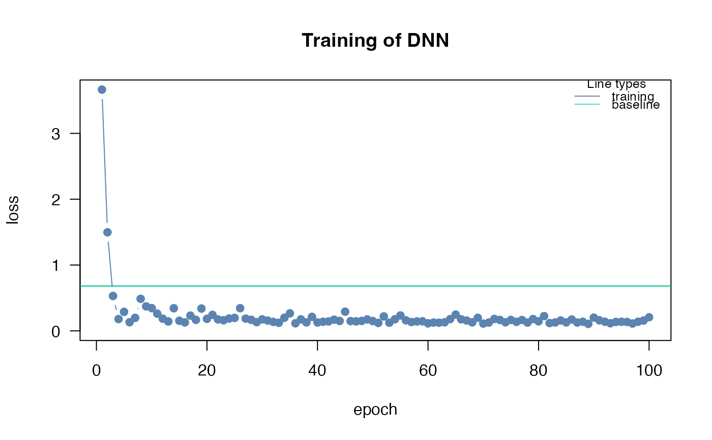
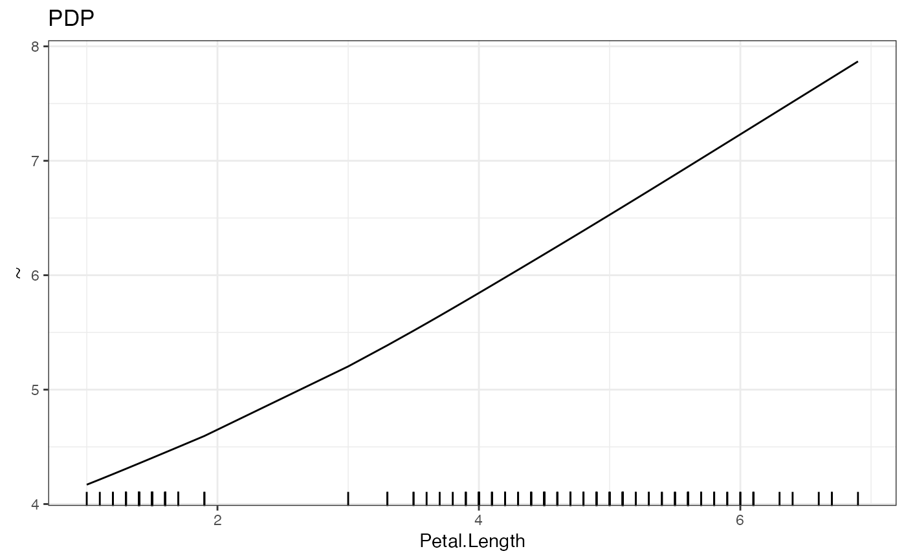

Calculates the Partial Dependency Plot for one feature, either numeric or categorical. Returns it as a plot.
Usage
PDP(
model,
variable = NULL,
data = NULL,
ice = FALSE,
resolution.ice = 20,
plot = TRUE,
parallel = FALSE,
...
)
# S3 method for class 'citodnn'
PDP(
model,
variable = NULL,
data = NULL,
ice = FALSE,
resolution.ice = 20,
plot = TRUE,
parallel = FALSE,
...
)
# S3 method for class 'citodnnBootstrap'
PDP(
model,
variable = NULL,
data = NULL,
ice = FALSE,
resolution.ice = 20,
plot = TRUE,
parallel = FALSE,
...
)Arguments
- model
a model created by
dnn- variable
variable as string for which the PDP should be done. If none is supplied it is done for all variables.
- data
specify new data PDP should be performed . If NULL, PDP is performed on the training data.
- ice
Individual Conditional Dependence will be shown if TRUE
- resolution.ice
resolution in which ice will be computed
- plot
plot PDP or not
- parallel
parallelize over bootstrap models or not
- ...
arguments passed to
predict
Value
A list of plots made with 'ggplot2' consisting of an individual plot for each defined variable.
Description
Performs a Partial Dependency Plot (PDP) estimation to analyze the relationship between a selected feature and the target variable.
The PDP function estimates the partial function \(\hat{f}_S\):
\(\hat{f}_S(x_S)=\frac{1}{n}\sum_{i=1}^n\hat{f}(x_S,x^{(i)}_{C})\)
with a Monte Carlo Estimation:
\(\hat{f}_S(x_S)=\frac{1}{n}\sum_{i=1}^n\hat{f}(x_S,x^{(i)}_{C})\) using a Monte Carlo estimation method. It calculates the average prediction of the target variable for different values of the selected feature while keeping other features constant.
For categorical features, all data instances are used, and each instance is set to one level of the categorical feature. The average prediction per category is then calculated and visualized in a bar plot.
If the ice parameter is set to TRUE, the Individual Conditional Expectation (ICE) curves are also shown. These curves illustrate how each individual data sample reacts to changes in the feature value. Please note that this option is not available for categorical features. Unlike PDP, the ICE curves are computed using a value grid instead of utilizing every value of every data entry.
Note: The PDP analysis provides valuable insights into the relationship between a specific feature and the target variable, helping to understand the feature's impact on the model's predictions. If a categorical feature is analyzed, all data instances are used and set to each level. Then an average is calculated per category and put out in a bar plot.
If ice is set to true additional the individual conditional dependence will be shown and the original PDP will be colored yellow. These lines show, how each individual data sample reacts to changes in the feature. This option is not available for categorical features. Unlike PDP the ICE curves are computed with a value grid instead of utilizing every value of every data entry.
Examples
# \donttest{
if(torch::torch_is_installed()){
library(cito)
# Build and train Network
nn.fit<- dnn(Sepal.Length~., data = datasets::iris)
PDP(nn.fit, variable = "Petal.Length")
}
#> Loss at epoch 1: 3.056066, lr: 0.01000

#> Loss at epoch 2: 0.206752, lr: 0.01000
#> Loss at epoch 3: 0.444149, lr: 0.01000
#> Loss at epoch 4: 0.209327, lr: 0.01000
#> Loss at epoch 5: 0.243272, lr: 0.01000
#> Loss at epoch 6: 0.259954, lr: 0.01000
#> Loss at epoch 7: 0.212066, lr: 0.01000
#> Loss at epoch 8: 0.379279, lr: 0.01000
#> Loss at epoch 9: 0.211489, lr: 0.01000
#> Loss at epoch 10: 0.212306, lr: 0.01000
#> Loss at epoch 11: 0.225586, lr: 0.01000
#> Loss at epoch 12: 0.201124, lr: 0.01000
#> Loss at epoch 13: 0.297985, lr: 0.01000
#> Loss at epoch 14: 0.167940, lr: 0.01000
#> Loss at epoch 15: 0.283490, lr: 0.01000
#> Loss at epoch 16: 0.186747, lr: 0.01000
#> Loss at epoch 17: 0.159820, lr: 0.01000
#> Loss at epoch 18: 0.190094, lr: 0.01000
#> Loss at epoch 19: 0.139157, lr: 0.01000
#> Loss at epoch 20: 0.128203, lr: 0.01000
#> Loss at epoch 21: 0.280738, lr: 0.01000
#> Loss at epoch 22: 0.158298, lr: 0.01000
#> Loss at epoch 23: 0.141379, lr: 0.01000
#> Loss at epoch 24: 0.170277, lr: 0.01000
#> Loss at epoch 25: 0.245058, lr: 0.01000
#> Loss at epoch 26: 0.147651, lr: 0.01000
#> Loss at epoch 27: 0.143581, lr: 0.01000
#> Loss at epoch 28: 0.283208, lr: 0.01000
#> Loss at epoch 29: 0.126197, lr: 0.01000
#> Loss at epoch 30: 0.151160, lr: 0.01000
#> Loss at epoch 31: 0.246563, lr: 0.01000
#> Loss at epoch 32: 0.132382, lr: 0.01000
#> Loss at epoch 33: 0.257293, lr: 0.01000
#> Loss at epoch 34: 0.159634, lr: 0.01000
#> Loss at epoch 35: 0.189269, lr: 0.01000
#> Loss at epoch 36: 0.162687, lr: 0.01000
#> Loss at epoch 37: 0.141254, lr: 0.01000
#> Loss at epoch 38: 0.148198, lr: 0.01000
#> Loss at epoch 39: 0.127909, lr: 0.01000
#> Loss at epoch 40: 0.129591, lr: 0.01000
#> Loss at epoch 41: 0.126183, lr: 0.01000
#> Loss at epoch 42: 0.152165, lr: 0.01000
#> Loss at epoch 43: 0.164498, lr: 0.01000
#> Loss at epoch 44: 0.114322, lr: 0.01000
#> Loss at epoch 45: 0.149819, lr: 0.01000
#> Loss at epoch 46: 0.136400, lr: 0.01000
#> Loss at epoch 47: 0.187270, lr: 0.01000
#> Loss at epoch 48: 0.224981, lr: 0.01000
#> Loss at epoch 49: 0.250870, lr: 0.01000
#> Loss at epoch 50: 0.168200, lr: 0.01000
#> Loss at epoch 51: 0.130245, lr: 0.01000
#> Loss at epoch 52: 0.148281, lr: 0.01000
#> Loss at epoch 53: 0.277810, lr: 0.01000
#> Loss at epoch 54: 0.138896, lr: 0.01000
#> Loss at epoch 55: 0.161979, lr: 0.01000
#> Loss at epoch 56: 0.127498, lr: 0.01000
#> Loss at epoch 57: 0.127460, lr: 0.01000
#> Loss at epoch 58: 0.147152, lr: 0.01000
#> Loss at epoch 59: 0.130498, lr: 0.01000
#> Loss at epoch 60: 0.164854, lr: 0.01000
#> Loss at epoch 61: 0.158102, lr: 0.01000
#> Loss at epoch 62: 0.220048, lr: 0.01000
#> Loss at epoch 63: 0.130432, lr: 0.01000
#> Loss at epoch 64: 0.183237, lr: 0.01000
#> Loss at epoch 65: 0.163204, lr: 0.01000
#> Loss at epoch 66: 0.131748, lr: 0.01000
#> Loss at epoch 67: 0.144292, lr: 0.01000
#> Loss at epoch 68: 0.115420, lr: 0.01000
#> Loss at epoch 69: 0.179013, lr: 0.01000
#> Loss at epoch 70: 0.118123, lr: 0.01000
#> Loss at epoch 71: 0.154370, lr: 0.01000
#> Loss at epoch 72: 0.159719, lr: 0.01000
#> Loss at epoch 73: 0.262615, lr: 0.01000
#> Loss at epoch 74: 0.109099, lr: 0.01000
#> Loss at epoch 75: 0.121551, lr: 0.01000
#> Loss at epoch 76: 0.105504, lr: 0.01000
#> Loss at epoch 77: 0.117623, lr: 0.01000
#> Loss at epoch 78: 0.125404, lr: 0.01000
#> Loss at epoch 79: 0.119086, lr: 0.01000
#> Loss at epoch 80: 0.296254, lr: 0.01000
#> Loss at epoch 81: 0.139678, lr: 0.01000
#> Loss at epoch 82: 0.241450, lr: 0.01000
#> Loss at epoch 83: 0.239207, lr: 0.01000
#> Loss at epoch 84: 0.128296, lr: 0.01000
#> Loss at epoch 85: 0.211476, lr: 0.01000
#> Loss at epoch 86: 0.159788, lr: 0.01000
#> Loss at epoch 87: 0.129653, lr: 0.01000
#> Loss at epoch 88: 0.123762, lr: 0.01000
#> Loss at epoch 89: 0.120073, lr: 0.01000
#> Loss at epoch 90: 0.187975, lr: 0.01000
#> Loss at epoch 91: 0.105751, lr: 0.01000
#> Loss at epoch 92: 0.200607, lr: 0.01000
#> Loss at epoch 93: 0.126560, lr: 0.01000
#> Loss at epoch 94: 0.236886, lr: 0.01000
#> Loss at epoch 95: 0.101091, lr: 0.01000
#> Loss at epoch 96: 0.111598, lr: 0.01000
#> Loss at epoch 97: 0.104656, lr: 0.01000
#> Loss at epoch 98: 0.114274, lr: 0.01000
#> Loss at epoch 99: 0.196168, lr: 0.01000
#> Loss at epoch 100: 0.103271, lr: 0.01000

# }